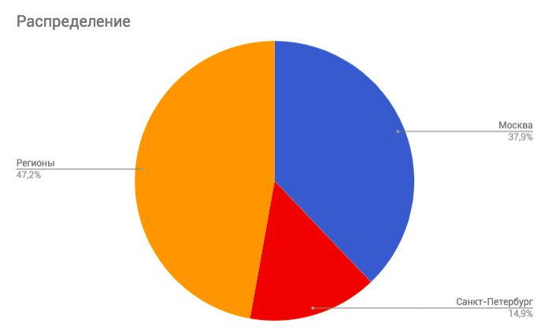
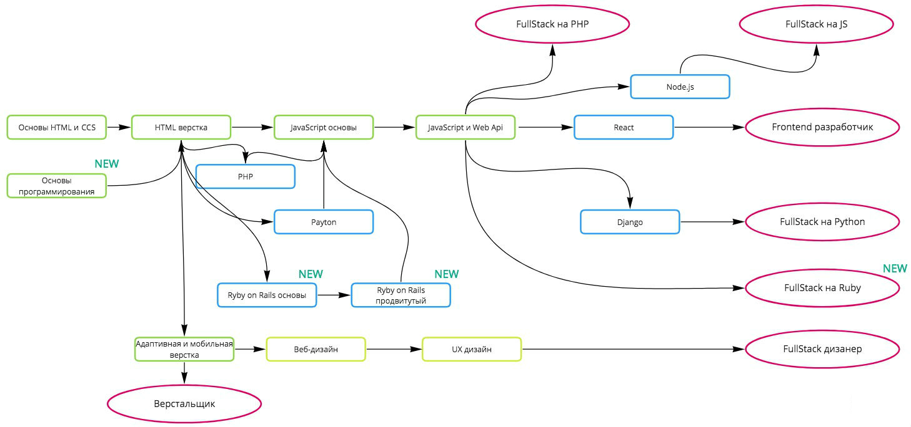
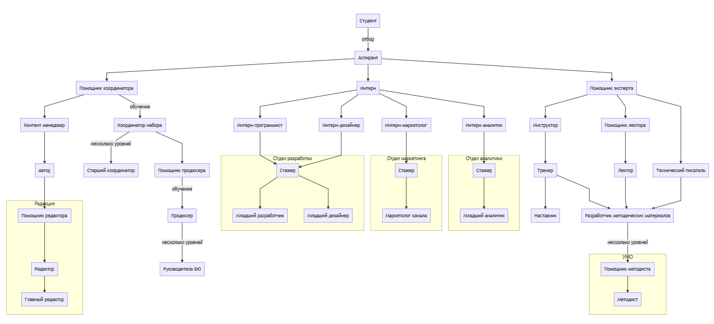

Приветствие
Дмитрий Фитискин
Руководитель направления
Анастасия Зеленская
Продюсер
Рынки
- Услуги обучения новым актуальным, высокооплачиваемым профессиям, связанным с программированием
- Услуги предоставления квалифицированных кадров (программистов) мелким и средним IT-компаниям
- Услуги повышения квалификации сотрудников (программистов) IT-компаний
Спрос на разработчиков
Вакансий в месяц:
Всего — 29 450
Москва — 11 153
Санкт-Петербург — 4 402
Регионы — 13 895

Бенефиты программирования
- Программирование позволяет развивать ценные навыки для различных специальностей
- Страх оказаться невосстребованным в результате всеобщей компьютеризации
- Высооплачиваемая работа с достачно низким порогом вхождения
- Наиболее широкие возможности выбрать интересующую сферу и направление
- Возможность работать из любой точки мира
- Возможность работать на зарубежные компании
- Возможность работать по гибкому графику
Целевая аудитория: обучение
- Начало карьры (студенты)
- Невосстребованные/низкооплачиваемые профессии
- Новички в программировании
- Смежные с IT профессии (дизайнеры, менеджеры проектов, контент-менеджеры и пр.)
- Стартаперы / Предприниматели
Целевая аудитория: кадры и повешение квалификации
- Веб-студии
- Стартапы
- IT-подразделения средних и крупных компаний
Конкуренты
- GeekBrains
- HTML Academy
- Специалист
- SkillBox
- Otus
Продукт
- Структура практик модуля — как точка входа одинаково хорошо понятная всем участникам проекта
- Грамотная декомпозиция модулей
- Четкое понимание что такое практика и что практикой не является
- Внешние практикующие эксперты
- Активное привечение выпускников к обучению студентов (убиваем двух зайцев, аспирантство как часть обучения)
- Фокус на мотивацию
- Развитие soft skills
Ценность продукта для клиента
- Качественно проработанные продукты
- Последовательный образовательный опыт
- Практические задачи максимально приближены к реальным, решения которых становится частью портфолио
- Ипользование современных инструментов и подходов к разработке
- Актуальные знания
- Своевременная менторская поддержка
- Высокая вероятность достижения образовательных целей
- Повышение ценности как специалиста
Текущая программная линейка (схема)

Текущая программная линейка
- 1 бесплатный продукт (WM)
- 4 продукта (FS, FE, PD, FD)
- 9 модулей (HTML, JS, HJ, RA, PHP, PY, ND, MQ, WM)
- 1 спорный продукт с которым нужно что-то делать (ND)
3 690 000 — средний ежемесячный доход
611 000 — средняя ежемесячная прибыль
Программная линейка на конец квартала
- 2 бесплатный продукта (WM, PB)
- 6 продуктов (FS, FE, PD, FD, ROR, PDS)
- 11 модулей (HTML, JS, HJ, RA, PHP, PY, ND, MQ, WM, DJ, RB, RB2)
5 300 000 — средний ежемесячный доход
690 000 — средняя ежемесячная прибыль, с учетом затрат на разработку новых программ
Направления расширения линейки
- Мобильная разработка
- Управление и организация разработки (тимлид, CTO)
- Системное проектирование
А почему бы и нет?
- Разработка игр
- IoT
- Q&A (тестирование)
Карьерная лестница БЮ

Проблемы направления
- Низкая рентабельность
- Медленно запускаем новые продукты, и обновляем старые
- Дефицит экспертов
- Высокие расходы на маркетинг
- Высокие затраты на практику
- Низкий процент доучившихся
Низкая рентабельность
Причины:
- Высокие затраты на часть модулей (HTML, PHP, PY, ND)
- Высокие расходы на маркетинг
- Недобор студентов по части продуктов
Сокращение расходов на текущую программную линейку
- Оптимизация всех модулей, убрав темы, которые не несут особой ценности
- PY и PHP: Вынесение баз данных в отдельный модуль
- PY: Вынос части модуля в DJ
- ND: пересмотреть применение модуля
Медленный запуск продуктов
Запуск MVP курса
- Анализ тематики курса на основе ее актуальности
- Анализ конкурентов
- Анализ затрат на запуск курса
- Анализ спроса на основе вакансий
- Выделение основных навыков вместе со старшим методистом
Медленный запуск продуктов
- Разработка структуры практик (дипломное задание, промежуточные проекты, домашние задание)
- Выделение теоретических знаний на основе практических задач
- Разработка подробных презентаций к лекции на основе веделенных теоретических знаний
- Построение лекции в формате задача-проблема-теория-решение
- Во время разработки программы проводим 3 открытых занятия для подогрева интереса аудитории, получения обратной связи по теме
Дефицит экспертов
- Построение комьюнити Code.Netology
- Онбординг экспетров
- Повышение лояльности экспертов
Высокие расходы на маркетинг
- Расширение воронки засчет БП и ОЗ
- Онбординг экспетров
- Поиск профессиональных сообществ с целью расширения дешевых каналов продвижения
- Маркетинг на этапе прозводства
Высокие затраты на практику
- Разрабатываем систему практик с обеспечением качества и количества, но снижаем расходы за счет аспирантов
- Эксперты получают фикс за практические задания. Но получают команду аспирантов
Низкий процент доучившихся
- Работаем над мотивацией студентов
- Тестируем новый формат обучения в формате перевернутого класса
Roadmap на лето